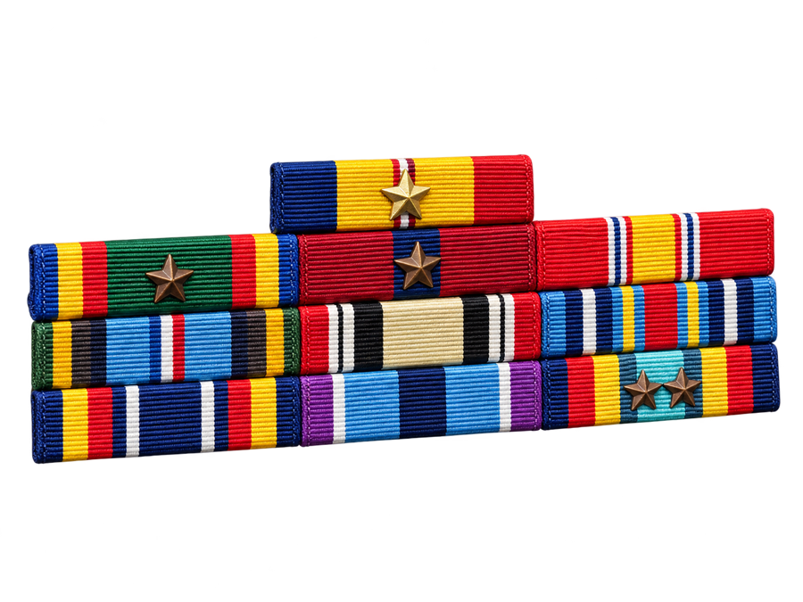
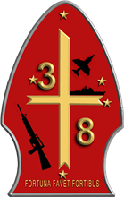

Lessons That Outlast the Uniform: From the Marine Corps to AI
On Veterans Day, Bryant University featured my path from the Marine Corps to product management and artificial intelligence. Here is that story in my own words, and what service still teaches me about leadership.
Rafael L. MuñozNov 15, 2026· 4 min read

This Veterans Day, Bryant University Graduate Programs published a feature on graduate students who have served in the military, and I was honored to be one of them. Reading it reminded me how much the Marine Corps still shapes the way I lead, learn, and build, so I wanted to keep a version of that story here, told in my own words.
I served in the United States Marine Corps for eight years, from 2003 to 2011. I started as an infantry rifleman with Lima Company, 3rd Battalion, 8th Marines, and deployed overseas three times: once to Haiti and twice to Iraq.
My first deployment took me to Port-au-Prince, Haiti, where my unit supported humanitarian operations, getting food, water, and other essentials to families in impoverished communities. My two deployments to Iraq followed, with humanitarian and combat operations near Fallujah and in Ramadi.

3rd Battalion, 8th MarinesInfantry rifleman, Lima CompanyThe Basic SchoolCombat Instructor, Quantico, VA
Teaching the Next Generation of Officers
When I came home, I chose to reenlist and serve in a different way. I became a Combat Instructor at The Basic School in Quantico, Virginia, where newly commissioned Marine officers are trained for the responsibility of leading Marines.
For four years, I taught combat tactics and military operations, along with practical lessons I had learned firsthand on deployment. Teaching new officers deepened my appreciation for leadership, mentorship, and education, and those lessons still guide my work and my studies today.
“Effective leadership requires empathy, responsibility, and a willingness to understand the people around you.”
— Rafael L. Muñoz, as quoted by Bryant University
To me, leading has never only meant giving instructions or making the call. It means supporting the people around you, passing on what you know, and helping others build the confidence and skills to succeed on their own.
From Game Design to Product Management
After the Marine Corps, I earned a bachelor's degree in Game Design and Development. I then spent about 11 years as a Product Manager at GTECH/IGT, helping develop lottery apps and websites for state lotteries across the country, including the Rhode Island Lottery app.
That work is where my interest in data analytics and artificial intelligence took hold. I kept seeing how they could lead to better business decisions, better products, and better experiences for customers.
Why Business Analytics and AI
When I started looking at graduate programs, I wanted one that brought technology, analytics, and business together. I found that combination in Bryant's Master of Science in Business Analytics and Artificial Intelligence (MSBAAI).
I wasn't looking for one more credential. I wanted an education that would build on the experience I already had, challenge me intellectually, and prepare me for where technology is heading. The program has expanded my knowledge of:
Databases and SQL
Machine learning
Retrieval-augmented generation (RAG) systems
AI governance
Exploratory data analysis
I'll complete my coursework in December 2026. My goal is to bring product management, leadership, business analytics, and AI together to help organizations innovate and grow.
Sharing What I've Learned: The STEAM Design Program
Education has been a passion of mine for a long time, and recently I've been putting it into practice. I developed the STEAM Design Program, an initiative that introduces elementary and middle school students to science, technology, engineering, art, and mathematics through hands-on learning.
Drawing on my background in technology and product development, along with what I've learned in graduate school, I designed interactive activities that encourage curiosity, creativity, and problem-solving.
In October 2026, the program piloted successfully at the Rhode Island Computer Museum, and the museum invited it back to offer monthly STEAM workshops for students. It brings together the things I care about most, technology, education, and mentorship, while helping young students discover their own potential.
What Comes Next
My ambitions aren't tied to a single job title or industry. I want to keep learning, creating, and contributing in ways that make a positive difference. Whether that's helping a company embrace emerging technology or encouraging a young student to discover a passion for science, the goal is the same: share what I've learned and use my experience to help others succeed.
Thank you to Bryant University Graduate Programs for sharing my story, and to every veteran carrying the lessons of service into whatever comes next.
Rafael L. Muñoz
Product Manager · Builder · Marine Corps Veteran — Rhode Island